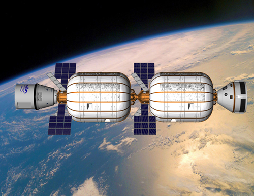

What’s going on in space and why should we care? Let me begin with two images:
I think the first image is self-explanatory; there is enough energy in space as well as down here on earth. The second one depicts asteroids in the inner solar system. Those asteroids have enough material to hypothetically construct big, comfortable space stations that combined would provide 3,000 times the surface area of earth – all as living space for future generations. So are we all doomed because current technology and policy don’t allow sustainable living on earth? Of course not. But it will take bold pioneers to take on the next “giant leap for humankind.”
Cube-Sats
In last year’s space blog post, we heard about top billionaire pioneers who are investing in space. But billions are not always necessary to create something of value. The rising makers movement doesn’t stop at hard space tech. For instance, the development of nano-satellites is driven by the same mechanics that brought computers into every home – smaller, cheaper, built by entrepreneurial teams headquartered in a garage or dorm room:
Startups like GomSpace, Solar System Express, and Infinity Aerospace are catering to that audience with parts and kits to build satellites. The startup NanoSatisfi and the OPS-SAT mission of the European Space Agency are democratizing access to satellites by providing timeshare plans for experiments. On the software side, there are space related hackathons and competitions like Space Apps Challenge, ESA App Camp, ESA App Challenge, or the Austrian FFG Space Apps Competition blooming all over the world.
Makers
The 3D printing boom is also highly relevant to space. Getting parts delivered to the international space station is very costly. Supplying future Mars missions in the nick of time will be straight out impossible. Think about processing the resources from future space mining directly in space instead of transporting them back to earth. We will need completely new fabrication methods that work in zero gravity. 3D printing seems to be the best solution for all of these challenges. There is even a competition to 3D print rocket engines with DIYROCKETS.
But the ultimate DIY rocket maker project has to be Copenhagen Suborbitals. Those guys are building a complete suborbital rocket with solely their hands and outside donations. It will take them some time to really fly a human, but so far they have come further than anyone thought possible. Watch some DIY space capsule building here.
Rocket test flights
What’s new with the big guys? SpaceX has made great progress, delivering cargo to the International Space Station and earning well-paid contracts from NASA, military and private satellite companies. But the most exciting development is their attempt to create a fully reusable rocket to make space travel as efficient as air travel is today. Currently SpaceX is testing the vertical landing of their Falcon 9’s first stage called Grasshopper. Check out the video:
Another contender for the orbital transportation market is Amazon founder and billionaire Jeff Bezo’s rocket company Blue Origin. It’s the most secretive of the lot, but at least we also have a vertical takeoff and landing video from them:
There is also fire behind Virgin Galactic’s SpaceShipTwo:
The engines are always the most difficult part of a rocket and The Space Ship Company (TSC, the company building Virgin Galactic’s air- and spacecraft) had to completely redevelop its engine with help of a more experienced contractor. Now it’s looking good for the first suborbital flight by the end of the year and passenger flights at least one year after that.
More space crafts
A new entry in the race to space is Swiss Space Systems. Their technical concept is similar to Virgin Galactic. The difference is that their spaceship will be mounted on top of an Airbus 300 instead of under the wing of a carrier plane:
Further down the development road is Sierra Nevada Corporation with their mini Space Shuttle-like Dream Chaser that will be boosted on top of a conventional rocket:
NASA and Bigelow
Even NASA is working on a new rocket, the SLS (Space Launch System). It will be built with components from the shuttle program and the strongest version will be able to haul 130 tons to low earth orbit. That’s 12 tons more than the Saturn rocket from the Apollo program. Such heavy lifting capabilities will enable new human exploration programs, like to asteroids, for example. Or it will be able to bring the biggest inflatable space station modules from Bigelow Aerospace into orbit. Here is an image of Bigelow’s medium-sized modules:

Bigelow just announced an agreement to place a smaller test module, the Bigelow Expandable Activity Module (BEAM) onto the International Space Station. There are also plans to use the modules as shelter for a moon station.
Interplanetary
Let’s move on from space stations to inter-world space travel. Mars One and Golden Spike are aiming to bring humans to Mars and Moon, respectively. Their business models couldn’t be more different at the moment. While Mars One wants to select their astronauts out of average citizens and finance the mission with a reality show, Golden Spike is looking for wealthy individuals to pay US$1.5 billion for a two-person Moon landing. Mars One has no immediate plans to bring their crew back, in contrast to a tourist round-trip package offered by Golden Spike.
Not a landing, but just a flyby around Mars is the goal of Denis Tito’s Inspiration Mars project. Denis Tito, the first space tourist, won’t be flying himself. He is looking for a married couple to make the trip. If it’s true that most relationships end during vacation, then this couple better have a very strong marriage to survive!
Space Mining
So there are quite a few fascinating space projects in the works, but maybe none will be as important for humankind than space-mining. We only have limited resources here on earth, and if we desire to settle in space and resupply earth, we will need to make use of the limitless wealth that space has to offer.
Planetary Resources is on its way to becoming the first space mining company, that is, if they are not beaten by their new contender Deep Space Industries. As with any other serious mining project, Planetary Resources begins with prospecting. Thus, their first generation of spacecraft will consist of telescopes designed to find, map, and categorize those hundreds of thousands of asteroids. One of those telescope satellites will display images from Kickstarter campaign funders, which will be photographed with a backdrop of earth, the moon or whatever they choose. Oh, and Richard Branson funded the Kickstarter campaign with 100k and also joined Planetary Resources’ core group of investors.
Let’s wrap up this long post with Deep Space Industries gorgeous introduction video. If you only want to watch one video from this post, this is the one: